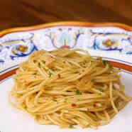

Spaghetti

Description
This recipe is easy and takes about 25 minutes to make
Please follow the steps carefully to make your spaghetti taste great!
Ingredients
- 1 pound spaghetti
- 2 pounds lean ground beef
- 1 onion, minced
- 1 (6 ounce) can tomato paste
- 2 (10.75 ounce) cans condensed tomato soup
- 2 1/2 cups water
Steps
- 1. Bring a large pot of lightly salted water to a boil.
- 2. Add pasta and cook for 8 to 10 minutes or until al dente; drain.
- 3. In a large skillet over medium heat, cook ground beef with onion until meat is brown.
- 4. Drain. Return meat mixture to pan with tomato paste, tomato soup and water.
- 5. Cook, stirring, until heated through and thickened, 5 to 15 minutes.
- 6. Serve over cooked pasta